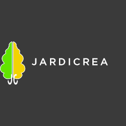

Création et entretien de jardins, aménagement paysager et travaux extérieurs à Jaulgonne et dans tout le sud de l'Aisne.
Demander un devisConception paysagère complète : plantations, massifs, pelouse, allées. Un jardin unique qui reflète vos envies.
Tonte, taille, désherbage, ramassage de feuilles. Entretien régulier pour un jardin soigné en toute saison.
Terrasses, bordures, clôtures, arrosage intégré. Tout pour faire de votre extérieur un espace de vie agréable.
Taille raisonnée, élagage en hauteur et abattage d'arbres. Intervention professionnelle et sécurisée.
Fondée en 1987, Jardicréa est une entreprise de paysagisme installée à Jaulgonne, dans le sud de l'Aisne, entre Château-Thierry et Dormans.
Depuis plus de 35 ans, nous accompagnons les particuliers dans la création et l'entretien de leurs espaces verts, avec une approche personnalisée et un souci permanent de qualité.
Chaque jardin est un projet unique. Nous prenons le temps de comprendre vos attentes pour vous proposer un aménagement harmonieux et durable.
Pour un devis ou un projet d'aménagement paysager.